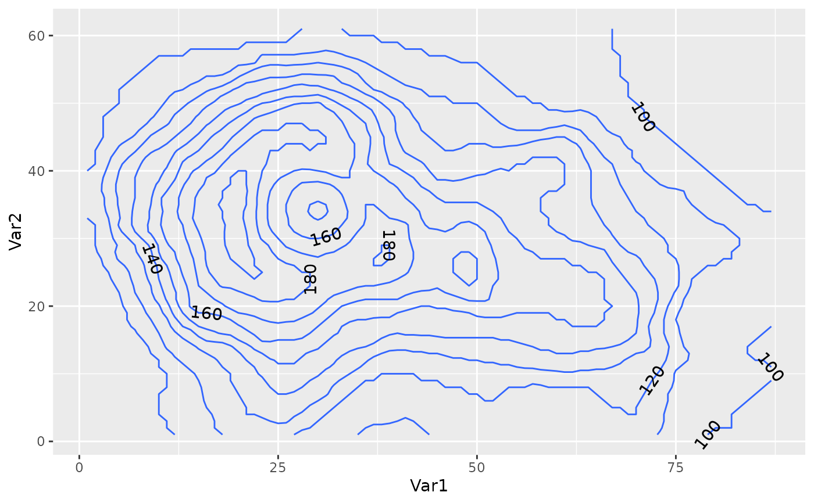
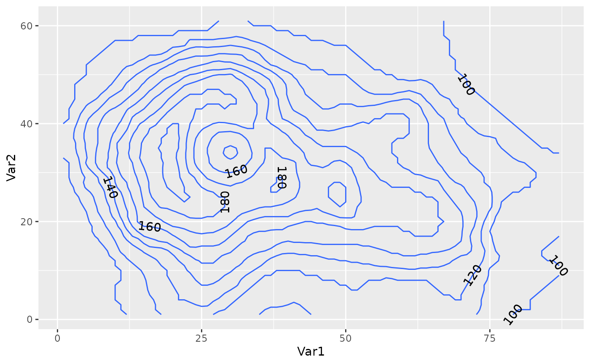

Label contours
Source:R/geom_label_contour.R, R/geom_text_contour.R, R/stat_contour2.r
geom_text_contour.RdDraws labels on contours built with ggplot2::stat_contour.
geom_label_contour(
mapping = NULL,
data = NULL,
stat = "text_contour",
position = "identity",
...,
min.size = 5,
skip = 1,
label.placer = label_placer_flattest(),
parse = FALSE,
nudge_x = 0,
nudge_y = 0,
label.padding = grid::unit(0.25, "lines"),
label.r = grid::unit(0.15, "lines"),
label.size = 0.25,
na.rm = FALSE,
show.legend = NA,
inherit.aes = TRUE
)
geom_text_contour(
mapping = NULL,
data = NULL,
stat = "text_contour",
position = "identity",
...,
min.size = 5,
skip = 1,
rotate = TRUE,
label.placer = label_placer_flattest(),
parse = FALSE,
nudge_x = 0,
nudge_y = 0,
stroke = 0,
check_overlap = FALSE,
na.rm = FALSE,
show.legend = NA,
inherit.aes = TRUE
)Arguments
- mapping
Set of aesthetic mappings created by
aes(). If specified andinherit.aes = TRUE(the default), it is combined with the default mapping at the top level of the plot. You must supplymappingif there is no plot mapping.- data
The data to be displayed in this layer. There are three options:
If
NULL, the default, the data is inherited from the plot data as specified in the call toggplot().A
data.frame, or other object, will override the plot data. All objects will be fortified to produce a data frame. Seefortify()for which variables will be created.A
functionwill be called with a single argument, the plot data. The return value must be adata.frame, and will be used as the layer data. Afunctioncan be created from aformula(e.g.~ head(.x, 10)).- stat
The statistical transformation to use on the data for this layer. When using a
geom_*()function to construct a layer, thestatargument can be used the override the default coupling between geoms and stats. Thestatargument accepts the following:A
Statggproto subclass, for exampleStatCount.A string naming the stat. To give the stat as a string, strip the function name of the
stat_prefix. For example, to usestat_count(), give the stat as"count".For more information and other ways to specify the stat, see the layer stat documentation.
- position
A position adjustment to use on the data for this layer. Cannot be jointy specified with
nudge_xornudge_y. This can be used in various ways, including to prevent overplotting and improving the display. Thepositionargument accepts the following:The result of calling a position function, such as
position_jitter().A string nameing the position adjustment. To give the position as a string, strip the function name of the
position_prefix. For example, to useposition_jitter(), give the position as"jitter".For more information and other ways to specify the position, see the layer position documentation.
- ...
Other arguments passed on to
layer()'sparamsargument. These arguments broadly fall into one of 4 categories below. Notably, further arguments to thepositionargument, or aesthetics that are required can not be passed through.... Unknown arguments that are not part of the 4 categories below are ignored.Static aesthetics that are not mapped to a scale, but are at a fixed value and apply to the layer as a whole. For example,
colour = "red"orlinewidth = 3. The geom's documentation has an Aesthetics section that lists the available options. The 'required' aesthetics cannot be passed on to theparams.When constructing a layer using a
stat_*()function, the...argument can be used to pass on parameters to thegeompart of the layer. An example of this isstat_density(geom = "area", outline.type = "both"). The geom's documentation lists which parameters it can accept.Inversely, when constructing a layer using a
geom_*()function, the...argument can be used to pass on parameters to thestatpart of the layer. An example of this isgeom_area(stat = "density", adjust = 0.5). The stat's documentation lists which parameters it can accept.The
key_glyphargument oflayer()may also be passed on through.... This can be one of the functions described as key glyphs, to change the display of the layer in the legend.
- min.size
minimum number of points for a contour to be labelled.
- skip
number of contours to skip
- label.placer
a label placer function. See
label_placer_flattest().- parse
If
TRUE, the labels will be parsed into expressions and displayed as described in?plotmath.- nudge_x, nudge_y
Horizontal and vertical adjustment to nudge labels by. Useful for offsetting text from points, particularly on discrete scales. Cannot be jointly specified with
position.- label.padding
Amount of padding around label. Defaults to 0.25 lines.
- label.r
Radius of rounded corners. Defaults to 0.15 lines.
- label.size
Size of label border, in mm.
- na.rm
If
FALSE, the default, missing values are removed with a warning. IfTRUE, missing values are silently removed.- show.legend
logical. Should this layer be included in the legends?
NA, the default, includes if any aesthetics are mapped.FALSEnever includes, andTRUEalways includes. It can also be a named logical vector to finely select the aesthetics to display.- inherit.aes
If
FALSE, overrides the default aesthetics, rather than combining with them. This is most useful for helper functions that define both data and aesthetics and shouldn't inherit behaviour from the default plot specification, e.g.borders().- rotate
logical indicating whether to rotate text following the contour.
- stroke
numerical indicating width of stroke relative to the size of the text. Ignored if less than zero.
- check_overlap
If
TRUE, text that overlaps previous text in the same layer will not be plotted.check_overlaphappens at draw time and in the order of the data. Therefore data should be arranged by the label column before callinggeom_text(). Note that this argument is not supported bygeom_label().
Details
Is best used with a previous call to ggplot2::stat_contour with the same
parameters (e.g. the same binwidth, breaks, or bins).
Note that while geom_text_contour() can angle itself to follow the contour,
this is not the case with geom_label_contour().
Aesthetics
geom_text_contour understands the following aesthetics (required aesthetics are in bold):
x
y
label
alphaanglecolourstroke.colorfamilyfontfacegrouphjustlineheightsizevjust
See also
Other ggplot2 helpers:
MakeBreaks(),
WrapCircular(),
geom_arrow(),
geom_contour2(),
geom_contour_fill(),
geom_relief(),
geom_streamline(),
guide_colourstrip(),
map_labels,
reverselog_trans(),
scale_divergent,
scale_longitude,
stat_na(),
stat_subset()
Examples
data.table::setDTthreads(1)
library(ggplot2)
v <- reshape2::melt(volcano)
g <- ggplot(v, aes(Var1, Var2)) +
geom_contour(aes(z = value))
g + geom_text_contour(aes(z = value))
 g + geom_text_contour(aes(z = value), stroke = 0.2)
g + geom_text_contour(aes(z = value), stroke = 0.2)
 g + geom_text_contour(aes(z = value), stroke = 0.2, stroke.colour = "red")
g + geom_text_contour(aes(z = value), stroke = 0.2, stroke.colour = "red")
 g + geom_text_contour(aes(z = value, stroke.colour = after_stat(level)), stroke = 0.2) +
scale_colour_gradient(aesthetics = "stroke.colour", guide = "none")
g + geom_text_contour(aes(z = value), rotate = FALSE)
g + geom_text_contour(aes(z = value),
label.placer = label_placer_random())

g + geom_text_contour(aes(z = value),
label.placer = label_placer_n(3))
g + geom_text_contour(aes(z = value, stroke.colour = after_stat(level)), stroke = 0.2) +
scale_colour_gradient(aesthetics = "stroke.colour", guide = "none")
g + geom_text_contour(aes(z = value), rotate = FALSE)
g + geom_text_contour(aes(z = value),
label.placer = label_placer_random())

g + geom_text_contour(aes(z = value),
label.placer = label_placer_n(3))
 g + geom_text_contour(aes(z = value),
label.placer = label_placer_flattest())
g + geom_text_contour(aes(z = value),
label.placer = label_placer_flattest())
 g + geom_text_contour(aes(z = value),
label.placer = label_placer_flattest(ref_angle = 90))
g + geom_text_contour(aes(z = value),
label.placer = label_placer_flattest(ref_angle = 90))